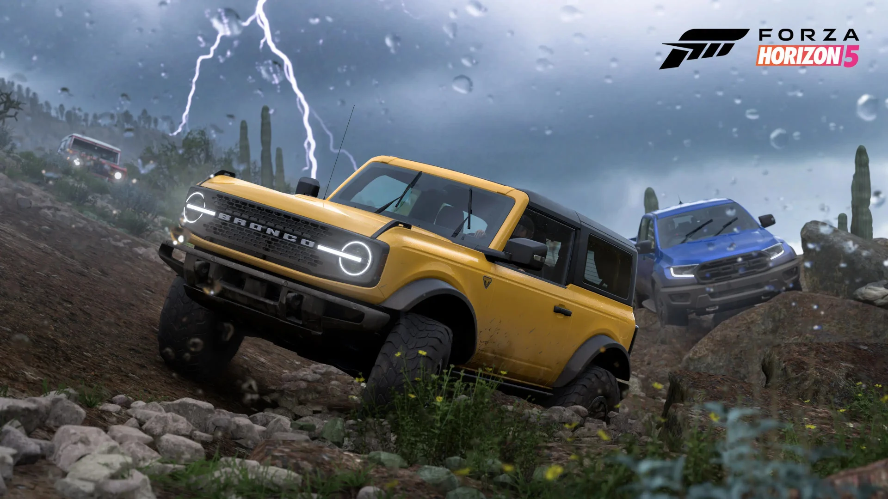
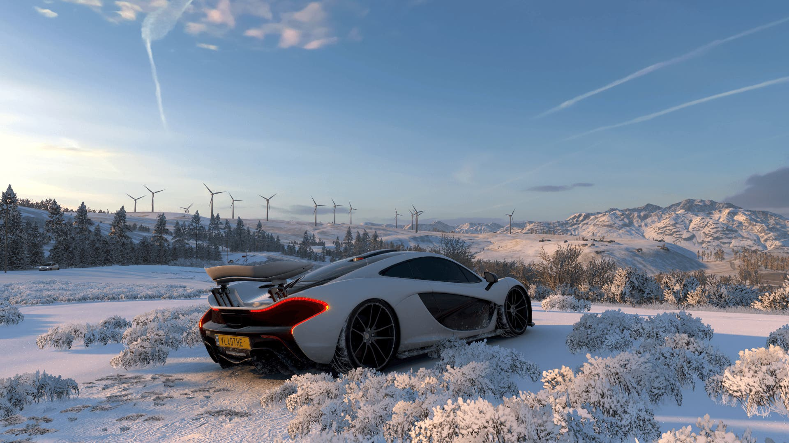
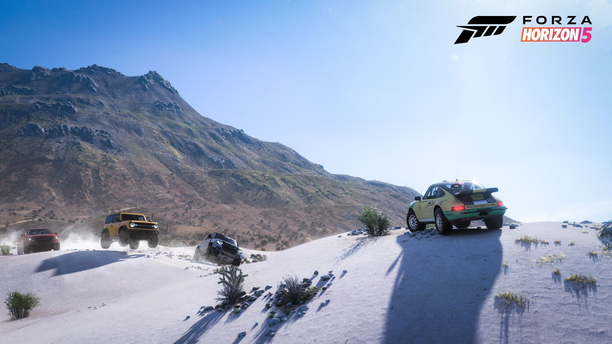

Forza Horizon 5 - Täydellinen peli autofaneille

Forza Horizon 5 on ilmiömäinen ajopeli, joka tempaa pelaajat mukaansa upeaan ja monipuoliseen avoimeen maailmaan, tarjoten lukemattomia tunteja viihdettä ja adrenaliinia. Graafisesti upea, pelattavuudeltaan koukuttava ja sisällöltään runsas, Forza Horizon 5 tarjoaa unohtumattoman kokemuksen kaikille autojen ystäville.
Yksi pelin huomattavimmista ominaisuuksista on sen henkeäsalpaava grafiikka. Autenttiset ympäristöt, dynaaminen sääjärjestelmä ja yksityiskohtainen autotekniikka luovat uskomattoman realistisen pelimaailman. Jokainen maisema on kuin maalattu taiteilijan siveltimellä, ja se houkuttelee pelaajat tutkimaan jokaista nurkkaa.

Pelattavuus on toinen Forza Horizon 5 -pelin vahva osa-alue. Ajofysiikka on erinomaista ja tarjoaa sekä aloittelijoille että kokeneille pelaajille sopivan tasapainon haasteen ja hauskanpidon välillä. Lisäksi pelin avoin maailma on täynnä aktiviteetteja ja kilpailuja, jotka pitävät pelaajan kiinnostuneena ja innostuneena tuntikausia.
Vaikka peli tarjoaa valtavan määrän sisältöä jo alkuperäisessä pelissä, on valitettavaa, että pelin DLC-paketit tuntuvat olevan hinnoiteltu turhan korkealle. Vaikka uudet lisäsisällöt tuovat mukanaan mielenkiintoisia lisäosia, niiden hinta saattaa tuntua kohtuuttomalta verrattuna niiden tarjoamaan lisäarvoon.

Yhteenvetona voidaan sanoa, että Forza Horizon 5 on ehdottomasti yksi parhaista ajopeleistä tähän asti. Upeat grafiikat, koukuttava pelattavuus ja valtava määrä sisältöä tekevät siitä pakko-ostoksen kaikille autojen ystäville. Kuitenkin, pelin DLC-pakettien hinta saattaa olla este joillekin pelaajille, ja tämä on asia, jota kehittäjien tulisi harkita tulevaisuudessa.